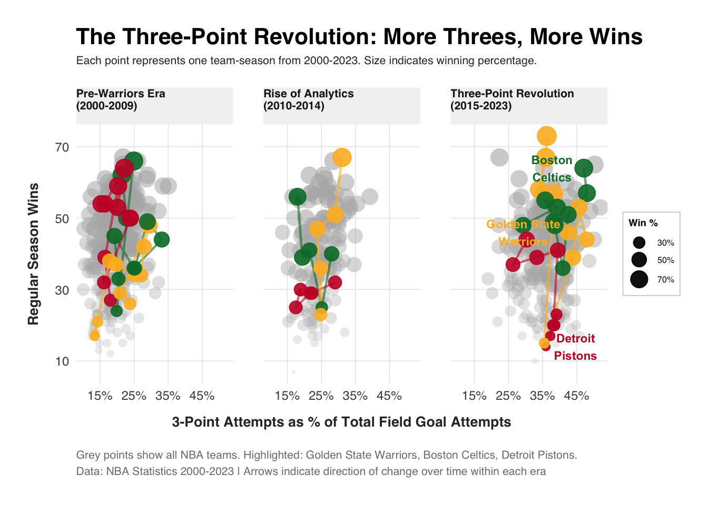

Code
# NYTimes-style multivariate visualization: NBA 3-Point Evolution
# Variables: Season, 3PT%, Wins, Win%, Team
library(ggplot2)
library(dplyr)
library(stringr)
# Prepare data - assuming team_stats has wins and games columns
team_stats <- team_stats %>%
mutate(
win_pct = win_percentage, # adjust column names as needed
era = case_when(
season_start < 2010 ~ "Pre-Warriors Era\n(2000-2009)",
season_start >= 2010 & season_start < 2015 ~ "Rise of Analytics\n(2010-2014)",
season_start >= 2015 ~ "Three-Point Revolution\n(2015-2023)"
),
era = factor(era, levels = c(
"Pre-Warriors Era\n(2000-2009)",
"Rise of Analytics\n(2010-2014)",
"Three-Point Revolution\n(2015-2023)"
)),
ThreeTeams = case_when(
str_detect(Team, 'Golden State Warriors') ~ 'Golden State\nWarriors',
str_detect(Team, 'Boston Celtics') ~ 'Boston\nCeltics',
str_detect(Team, 'Detroit Pistons') ~ 'Detroit\nPistons',
TRUE ~ 'Other'
),
label_team = if_else(
ThreeTeams != 'Other' & season_start %in% c(2023),
ThreeTeams,
NA_character_
)
)
# Calculate era averages for reference lines
era_averages <- team_stats %>%
group_by(era) %>%
summarise(
avg_3pt = mean(three_pt_attempt_pct, na.rm = TRUE),
avg_wins = mean(wins, na.rm = TRUE)
)
# Create the visualization
ggplot(team_stats, aes(x = three_pt_attempt_pct, y = wins)) +
geom_point(
data = team_stats %>% filter(ThreeTeams == 'Other'),
aes(size = win_pct, alpha = win_pct),
color = 'grey70',
shape = 16
) +
geom_path(
data = team_stats %>% filter(ThreeTeams != 'Other'),
aes(color = ThreeTeams, group = Team),
arrow = arrow(length = unit(0.15, "cm"), type = "closed"),
linewidth = 0.8,
alpha = 0.6
) +
geom_point(
data = team_stats %>% filter(ThreeTeams != 'Other'),
aes(color = ThreeTeams, size = win_pct),
alpha = 0.9
) +
ggrepel::geom_text_repel(
data = team_stats %>% filter(!is.na(label_team)),
aes(label = label_team, color = ThreeTeams),
size = 3,
fontface = "bold",
nudge_x = 2,
segment.size = 0.3,
segment.alpha = 0.5,
box.padding = 0.5
) +
facet_wrap(~era, ncol = 3) +
scale_color_manual(
values = c(
'Golden State\nWarriors' = '#FDB927',
'Boston\nCeltics' = '#007A33',
'Detroit\nPistons' = '#C8102E'
),
guide = "none"
) +
scale_size_continuous(
range = c(1, 6),
labels = scales::percent_format(),
breaks = c(0.3, 0.5, 0.7),
name = "Win %"
) +
scale_alpha_continuous(range = c(0.2, 0.6), guide = "none") +
scale_x_continuous(
labels = function(x) paste0(x, "%"),
breaks = seq(15, 50, by = 10)
) +
scale_y_continuous(breaks = seq(10, 70, by = 20)) +
labs(
title = "The Three-Point Revolution: More Threes, More Wins",
subtitle = "Each point represents one team-season from 2000-2023. Size indicates winning percentage.",
x = "3-Point Attempts as % of Total Field Goal Attempts",
y = "Regular Season Wins",
caption = "Grey points show all NBA teams. Highlighted: Golden State Warriors, Boston Celtics, Detroit Pistons.\nData: NBA Statistics 2000-2023 | Arrows indicate direction of change over time within each era"
) +
theme_minimal(base_size = 11, base_family = "sans") +
theme(
plot.title = element_text(
size = 16,
face = "bold",
hjust = 0,
margin = margin(b = 5)
),
plot.subtitle = element_text(
size = 8,
color = "grey20",
hjust = 0,
lineheight = 1.3,
margin = margin(b = 15)
),
plot.caption = element_text(
size = 8,
color = "grey50",
hjust = 0,
lineheight = 1.2,
margin = margin(t = 15)
),
axis.title = element_text(size = 10, face = "bold", color = "grey20"),
axis.text = element_text(size = 9, color = "grey30"),
axis.title.y = element_text(margin = margin(r = 10)),
axis.title.x = element_text(margin = margin(t = 10)),
strip.text = element_text(
size = 8,
face = "bold",
hjust = 0,
color = "grey10",
margin = margin(b = 10)
),
strip.background = element_rect(fill = "grey95", color = NA),
legend.position = "right",
legend.background = element_rect(fill = "white", color = "grey80", linewidth = 0.3),
legend.title = element_text(size = 7, face = "bold"),
legend.text = element_text(size = 6),
legend.key.height = unit(0.4, "cm"),
legend.key.width = unit(0.3, "cm"),
legend.margin = margin(4, 4, 4, 4),
panel.grid.minor = element_blank(),
panel.grid.major = element_line(color = "grey90", linewidth = 0.25),
panel.spacing = unit(1.5, "lines"),
plot.margin = margin(20, 20, 20, 20),
plot.background = element_rect(fill = "white", color = NA),
panel.background = element_rect(fill = "white", color = NA)
)